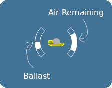

Depths of the Mind
By Chris Mondok
By Chris Mondok
Your score:
High score:
You are an aspiring artist, whose existing work has been criticised as shallow. You decide to take some time away from society, to contemplate life, below the depths of the ocean. You will return only after you feel you can produce art that is truly deep.
The object of the game is to descend to a deep depth, contemplate life, and then return to the surface, all without running out of air. The deeper your submarine, the more contemplation you can accomplish (naturally).
Your submarine can be propelled left and right. You can dive and surface by adding and removing air to the ballast tank. This air is is also your breathing air, so use this carefully.
Your submarine is equipped with a headlight. Aim it with the mouse, or the right joystick.
Operating the submarine requires your full concentration, you cannot pilot it while contemplating life.
Your submarine is durable, but should you crash into obstacles too hard, it will begin to leak air.

| Action | Keyboard | Controller |
|---|---|---|
| Contemplate life (hold) |
E or C |
|
| Move right | D or → |
|
| Move left | A or ← |
|
|
Increase ballast (ascend, consumes air) |
W |
|
|
Decrease ballast (descend) |
D |
|
| Aim Headlight | Mouse | Right Stick |
|
Emerge (while surfaced) |
Q | |
| Pause | Esc | |